SimCLR阅读
背景
以往自监督学习中方法的局限性。
graph LR
A[自监督学习方法]-->B[生成式]
A[自监督学习方法]-->C[判别式]
B[生成式]-->D[像素级别的生成计算复杂度较高]
C[判别式]-->E[往往特征表示受限于启发式的pretext task]
论文的贡献点
- 针对不同类型的数据增强组合能够有效的改善特征的表达。此外对比学习能够比监督学习更好的从数据增强中有明显改善。
- 引入一种可学习的非线性变换，这种变换在特征表示和对比学习的loss对学到的特征表示有本质的改善。（函数g）
- 对比交叉熵loss的表示学习受益于标准化的embedding和合适的温控参数
- 对比学习受益于大的batch size和长时间的训练相对于监督学习而言。与监督学习一样，对比学习也受益于更深更宽的网络。
方法
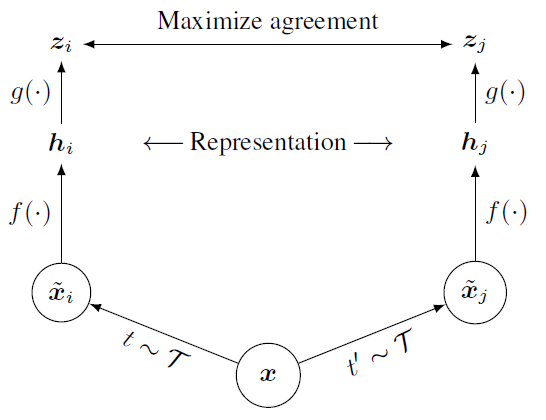
$\intercal$ 表示某种类型的数据增强操作（例如裁剪、颜色变化等）
大致思路：首先将x经过两种不同类型的数据增强操作后分别得到$\tilde{x_i}$ 和$\tilde{x_j}$ ,然后经过函数f,用于提取向量表示，这个f可以是任意的网络，例如：$h_i=f(\tilde{x_i})=ResNet(\tilde{x_i})$ .接着是一个projection head $g()$是一个映射网络，用于将学到的特征表示映射到对比loss的空间中。这里的g是一个隐藏层：$z_i=g(h_i)W^2\sigma(W^1h_i)$ ,其中$\sigma$ 是ReLU激活函数。
constrative loss: \(l_{i,j}=-log\frac{exp(sim(z_i,z_j)/\tau)}{\sum_{k=1}^{2N}1_{[k\nei]}exp(sim(z_i,z_k)/\tau)}\) 即将$z_i$和$z_j$ 通过计算两者的距离，然后用NT-Xent(the normalized temperature-scaled cross entropy loss)来计算两者是否来自同一张图片
伪代码：
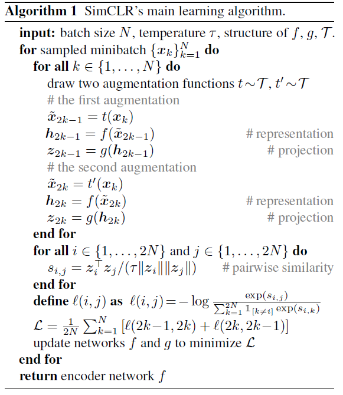
实验
数据增强对于Contrastive 表示学习
-
不同类型的数据增强
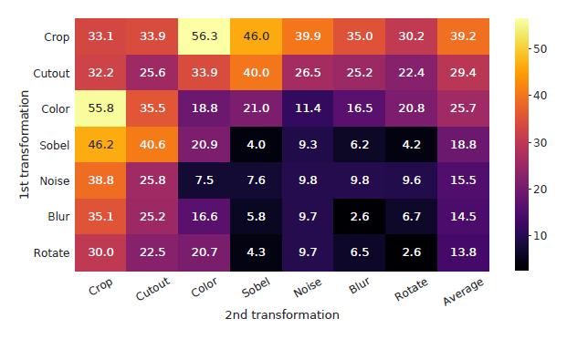
两种不同类型的数据增强在线性评估中能够带来更好的效果。其中效果最好的是进行颜色变化和随机裁剪的一组。
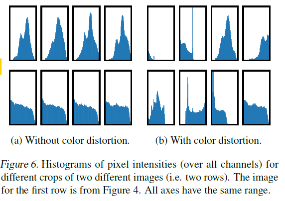
从上图的(a)中可以发现，他们像素的分布几乎都是一样的，所以如果单独只用随机的裁剪，导致那么这些从同一张图片中进行随机裁剪出来的patch他们在颜色上的分布几乎一样，所以网络会很容易从中学到，那么就不会学到什么有用的东西。而在加入颜色变化后，颜色的分布变得复杂了，能够学到更复杂的表示。
-
Constrative learning相对于监督学习来说更适合数据增强
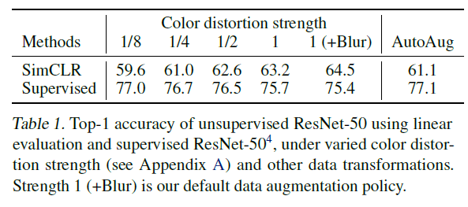
网络结构实验
-
无监督的Contrastive learning能够从更大的模型中学到东西
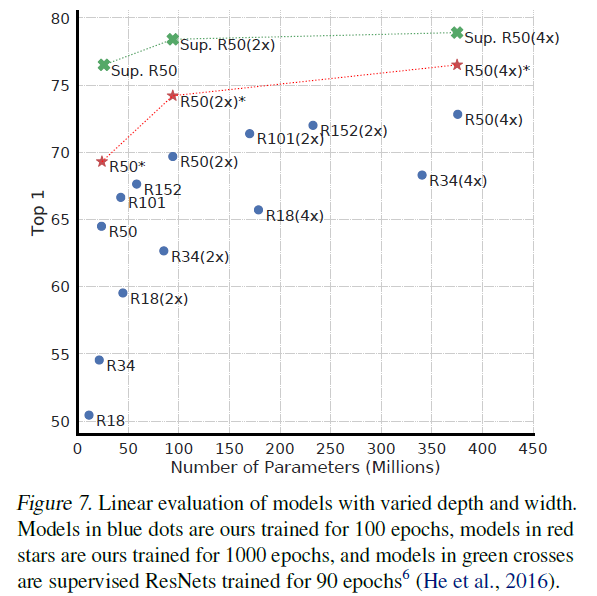
-
非线性映射在representation之后能够提高representation的质量
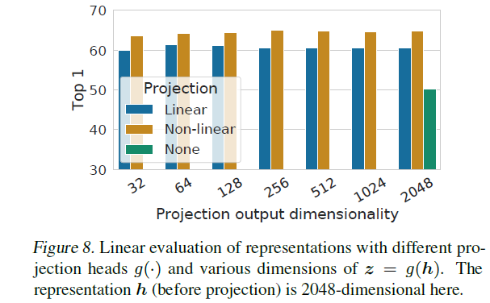
作者发现使用非线性映射能够获得更好的表达效果。另外，从最后一个比较中可以发现，使用了非线性映射后放在representation的后面效果较好（没有使用相当于是放在representation的后面）
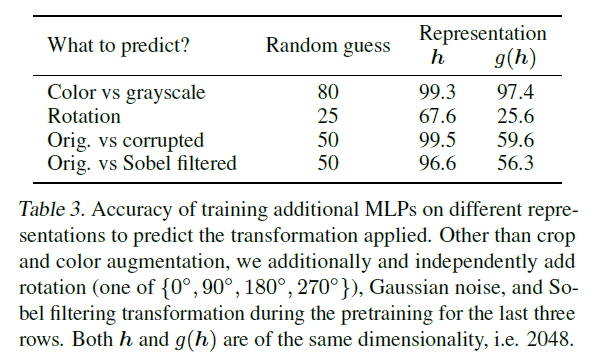
作者想通过这个表格说明中间学到的representation h相比于g(h)能够包含更多有用的信息。
-
标准化的交叉熵损失函数和合适的温控参数能够有更好的效果
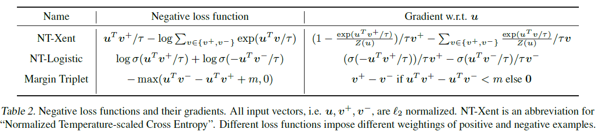
NT-Xent在进行求导的时候能够更好的考虑负样本
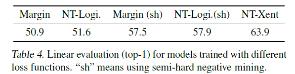
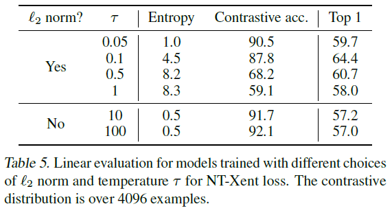
-
Contrastive learning能够从更大的batch size和更长的训练中进行训练
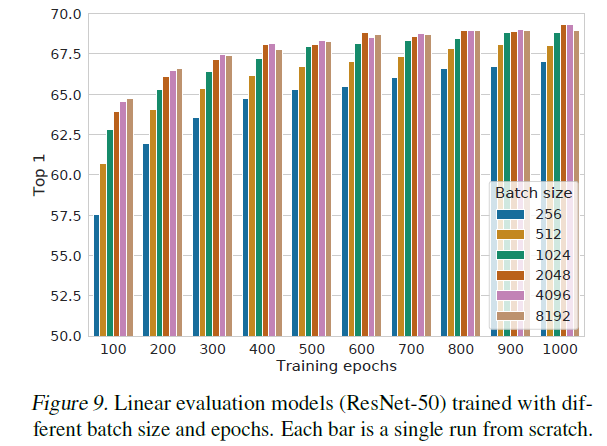
与SOTA对比
-
线性评估
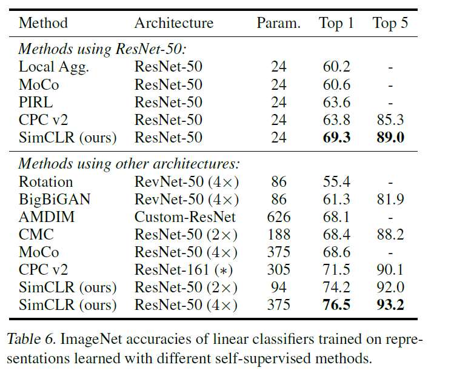
-
半监督学习对比
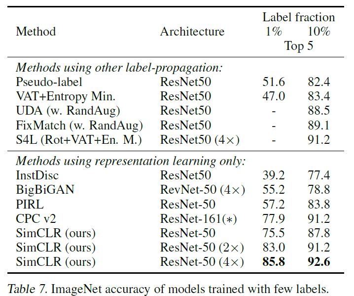
-
迁移学习对比
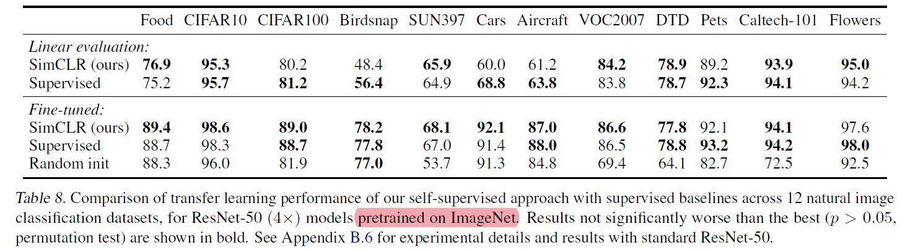